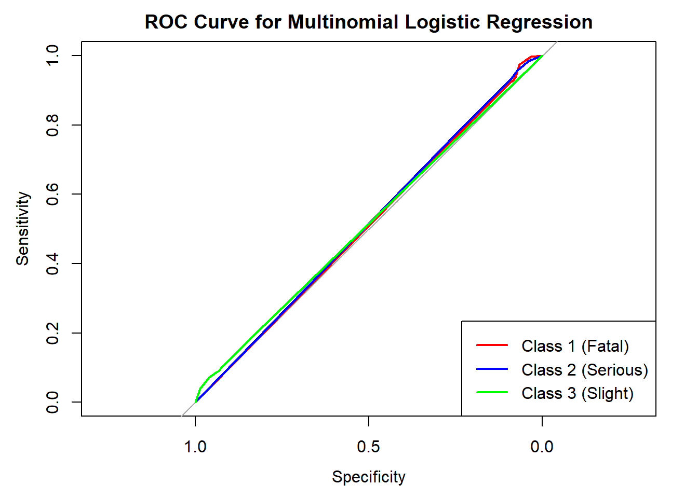
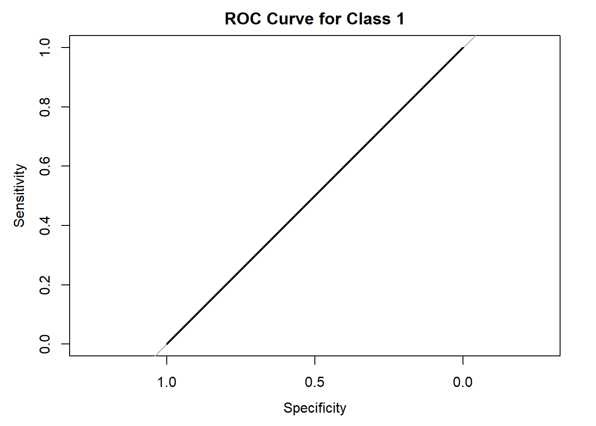
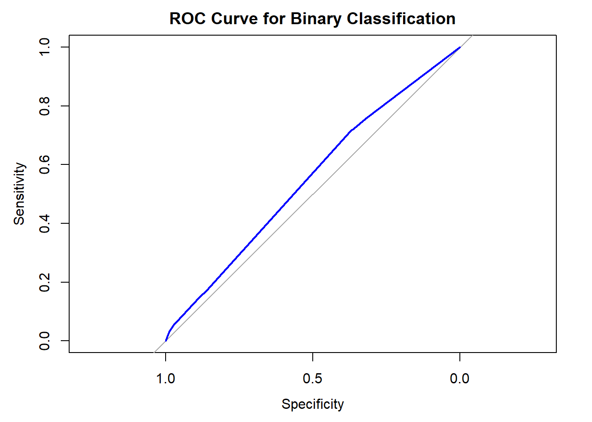

# Load required libraries
suppressWarnings({
library(tidyverse)
library(ggplot2)
library(plotly)
library(maps)
library(leaflet)
library(readr)
library(plotly)
library(dplyr)
library(viridis)
library(rnaturalearth) # For loading world map data
})Project Source Code
Loading Libraries:
# Load necessary libraries
library(dplyr)
library(ggplot2)
library(plotly)
# Load the data
road_casualities <- read.csv("C:\\Users\\Venkata\\Desktop\\stat1\\Final project\\casualty_statistics.csv")
# Data Cleaning Steps
# 1. Remove rows with missing or NA values in important columns
road_casualities <- road_casualities %>%
filter(!is.na(accident_severity),
!is.na(weather_conditions),
!is.na(road_surface_conditions))
# 2. Ensure the accident_severity column has valid values (1, 2, 3)
road_casualities <- road_casualities %>%
filter(accident_severity %in% c(1, 2, 3))
# 3. Convert necessary columns to factors
road_casualities$accident_severity <- factor(road_casualities$accident_severity,
levels = c(1, 2, 3),
labels = c("Life-Threatening", "Significant", "Mild"))
road_casualities$weather_conditions <- as.factor(road_casualities$weather_conditions)
road_casualities$road_surface_conditions <- as.factor(road_casualities$road_surface_conditions)
road_casualities$urban_or_rural_area <- as.factor(road_casualities$urban_or_rural_area)
# 4. Remove duplicates if any
road_casualities <- road_casualities %>% distinct()# Visualization with Cleaned Data
# Assign updated custom colors for each severity level
severity_colors <- c("Life-Threatening" = "red",
"Significant" = "darkorange",
"Mild" = "darkgreen")
# Create an Interactive Histogram with Updated Colors
histogram <- ggplot(road_casualities, aes(x = accident_severity, fill = accident_severity)) +
geom_bar(alpha = 0.7, color = "black") +
scale_fill_manual(values = severity_colors) +
labs(title = "Distribution of Accident Severity",
x = "Accident Severity",
y = "Count")
# Convert to interactive using plotly
interactive_histogram <- ggplotly(histogram, tooltip = c("count", "x"))
# Display the interactive histogram
interactive_histogramlibrary(ggplot2)
library(plotly)
# Load dataset
road_casualities <- read.csv("C:\\Users\\Venkata\\Desktop\\stat1\\Final project\\casualty_statistics.csv")
# Convert time column to a usable format (assuming time is in 24-hour format)
road_casualities$time_of_day <- as.numeric(substr(road_casualities$time, 1, 2))
# Define time bands based on STATS20 guidance
road_casualities$time_band <- cut(
road_casualities$time_of_day,
breaks = c(-1, 5, 9, 15, 19, 23),
labels = c("Night (Midnight to 5 AM)",
"Morning Rush Hour",
"Daytime",
"Evening Rush Hour",
"Night (8 PM to 11 PM)")
)
# Aggregate the data by time bands
time_band_summary <- road_casualities %>%
group_by(time_band) %>%
summarise(total_accidents = n()) %>%
arrange(desc(total_accidents))
# Create a ggplot object with gradient colors
time_band_plot <- ggplot(time_band_summary, aes(x = time_band, y = total_accidents, fill = total_accidents)) +
geom_bar(stat = "identity", color = "black", alpha = 0.8) +
labs(
title = "Accidents by Time Bands (STATS20)",
x = "Time Band",
y = "Number of Accidents"
) +
scale_fill_gradient(low = "pink", high = "red", name = "Total Accidents") +
theme_minimal() +
theme(axis.text.x = element_text(angle = 45, hjust = 1))
# Convert the plot to interactive using plotly
interactive_time_band_plot <- ggplotly(time_band_plot, tooltip = c("x", "y"))
# Display the interactive plot
interactive_time_band_plotlibrary(ggplot2)
library(plotly)
library(dplyr)
# Define light condition mapping (STATS20)
light_conditions_map <- c(
"1" = "Daylight",
"4" = "Dark (street lights present and lit)",
"5" = "Dark (street lights present but unlit)",
"6" = "Dark (no street lights)",
"7" = "Other"
)
# Map light conditions
road_casualities$light_conditions <- as.factor(
light_conditions_map[as.character(road_casualities$light_conditions)]
)
# Ensure weather conditions are mapped
weather_conditions_map <- c(
"1" = "Fine without high winds",
"2" = "Raining without high winds",
"3" = "Snowing without high winds",
"4" = "Fine with high winds",
"5" = "Raining with high winds",
"6" = "Snowing with high winds",
"7" = "Fog or mist",
"8" = "Other",
"9" = "Unknown"
)
road_casualities$weather_conditions <- as.factor(
weather_conditions_map[as.character(road_casualities$weather_conditions)]
)
# Create summary data for heatmap
heatmap_data <- road_casualities %>%
group_by(weather_conditions, light_conditions) %>%
summarise(total_accidents = n(), .groups = "drop")
# Create the heatmap with data labels and contrasting colors
heatmap_plot <- ggplot(heatmap_data, aes(x = weather_conditions, y = light_conditions, fill = total_accidents)) +
geom_tile(color = "white") +
geom_text(aes(label = total_accidents), color = "black", size = 3) + # Add data labels
scale_fill_gradient(low = "#f9f9f9", high = "#d73027", name = "Total Accidents") +
labs(
title = "Accidents by Weather and Light Conditions",
x = "Weather Conditions",
y = "Light Conditions"
) +
theme_minimal() +
theme(
axis.text.x = element_text(angle = 45, hjust = 1, size = 10),
axis.text.y = element_text(size = 10),
plot.title = element_text(size = 14, face = "bold"),
legend.title = element_text(size = 10),
legend.text = element_text(size = 8)
)
# Make the heatmap interactive
interactive_heatmap <- ggplotly(heatmap_plot, tooltip = c("x", "y", "fill"))
interactive_heatmaplibrary(ggplot2)
library(plotly)
library(dplyr)
# Load the dataset
road_casualities <- read.csv("C:\\Users\\Venkata\\Desktop\\stat1\\Final project\\casualty_statistics.csv")
# Define weather condition mapping
weather_conditions_map <- c(
"1" = "Fine without high winds",
"2" = "Raining without high winds",
"3" = "Snowing without high winds",
"4" = "Fine with high winds",
"5" = "Raining with high winds",
"6" = "Snowing with high winds",
"7" = "Fog or mist",
"8" = "Other",
"9" = "Unknown"
)
# Map weather conditions
road_casualities$weather_conditions_desc <- as.factor(weather_conditions_map[as.character(road_casualities$weather_conditions)])
# Summarize the data to get accident counts by weather condition
weather_summary <- road_casualities %>%
group_by(weather_conditions_desc) %>%
summarise(total_accidents = n(), .groups = "drop")
# Add a clean label for the tooltip
weather_summary$tooltip_label <- paste0(
"Weather: ", weather_summary$weather_conditions_desc,
"<br>Total Accidents: ", weather_summary$total_accidents
)
# Create a bar plot with dynamic red shading
weather_plot <- ggplot(weather_summary, aes(
x = reorder(weather_conditions_desc, -total_accidents),
y = total_accidents,
fill = total_accidents,
text = tooltip_label # Use clean tooltip labels
)) +
geom_bar(stat = "identity", color = "black", alpha = 0.8) +
scale_fill_gradient(low = "#FFC1C1", high = "#8B0000", name = "Total Accidents") +
labs(
title = "Accidents by Weather Conditions",
x = "Weather Conditions",
y = "Number of Accidents"
)
# Make it interactive and use the clean tooltip
interactive_weather_plot <- ggplotly(weather_plot, tooltip = "text")
interactive_weather_plot# Load the dataset
road_casualities <- read.csv("C:\\Users\\Venkata\\Desktop\\stat1\\Final project\\casualty_statistics.csv")
# Load necessary libraries
library(ggplot2)
library(dplyr)
library(plotly)
# Define STATS19 road surface condition mapping
road_conditions_map <- c(
"1" = "Dry",
"2" = "Wet or damp",
"3" = "Snow",
"4" = "Frost or ice",
"5" = "Flood",
"6" = "Oil or diesel",
"7" = "Mud",
"8" = "Other",
"9" = "Unknown"
)
# Step 1: Filter valid road_surface_conditions values (1 to 9)
road_casualities <- road_casualities %>%
filter(road_surface_conditions %in% c(1:9))
# Step 2: Map road conditions to descriptions
road_casualities$road_conditions_desc <- as.factor(
road_conditions_map[as.character(road_casualities$road_surface_conditions)]
)
# Debugging: Check unique values in road_conditions_desc
print("Mapped descriptions:")[1] "Mapped descriptions:"print(unique(road_casualities$road_conditions_desc))[1] Wet or damp Dry Unknown Frost or ice Snow
[6] Flood
Levels: Dry Flood Frost or ice Snow Unknown Wet or damp# Step 3: Aggregate data by road surface condition
road_summary <- road_casualities %>%
group_by(road_conditions_desc) %>%
summarise(total_accidents = n()) %>%
arrange(desc(total_accidents))
# Debugging: Check aggregated data
print("Aggregated road surface condition data:")[1] "Aggregated road surface condition data:"print(road_summary)# A tibble: 6 2
road_conditions_desc total_accidents
<fct> <int>
1 Dry 72752
2 Wet or damp 26944
3 Unknown 1617
4 Frost or ice 1461
5 Snow 241
6 Flood 179# Step 4: Create the bar plot
road_plot <- ggplot(road_summary, aes(
x = reorder(road_conditions_desc, -total_accidents),
y = total_accidents,
fill = road_conditions_desc,
text = paste0(road_conditions_desc, ": ", total_accidents, " accidents")
)) +
geom_bar(stat = "identity", alpha = 0.8, color = "black") +
labs(
title = "Distribution of Accidents by Road Surface Conditions (STATS19)",
x = "Road Surface Conditions",
y = "Number of Accidents"
) +
scale_fill_manual(values = c(
"Dry" = "red",
"Wet or damp" = "#73a2c6",
"Snow" = "#1b9e77",
"Frost or ice" = "#d95f02",
"Flood" = "#7570b3",
"Oil or diesel" = "#e7298a",
"Mud" = "#66a61e",
"Other" = "#e6ab02",
"Unknown" = "#a6761d"
))
# Convert the plot to an interactive plot
interactive_road_plot <- ggplotly(road_plot, tooltip = "text")
# Display the interactive plot
interactive_road_plot# Load necessary libraries
library(caret)
# Load necessary libraries
library(nnet) # For multinomial logistic regression
library(caret) # For data partitioning
# Read the dataset
data <- read.csv("C:\\Users\\Venkata\\Desktop\\stat1\\Final project\\casualty_statistics.csv")
# Select relevant columns and remove rows with missing values
data_cleaned <- na.omit(data[, c("accident_severity", "weather_conditions")])
# Convert columns to factors
data_cleaned$accident_severity <- as.factor(data_cleaned$accident_severity)
data_cleaned$weather_conditions <- as.numeric(data_cleaned$weather_conditions)
# Split the dataset into training and testing sets
set.seed(42)
train_index <- createDataPartition(data_cleaned$accident_severity, p = 0.8, list = FALSE)
train_data <- data_cleaned[train_index, ]
test_data <- data_cleaned[-train_index, ]
# Train multinomial logistic regression model
multinom_model <- multinom(accident_severity ~ weather_conditions, data = train_data)# weights: 9 (4 variable)
initial value 91633.053773
iter 10 value 50406.679444
final value 50392.493956
converged# Summarize the model
summary(multinom_model)Call:
multinom(formula = accident_severity ~ weather_conditions, data = train_data)
Coefficients:
(Intercept) weather_conditions
2 2.64414 0.06126746
3 3.76240 0.12285242
Std. Errors:
(Intercept) weather_conditions
2 0.04240724 0.02156981
3 0.04154713 0.02120177
Residual Deviance: 100785
AIC: 100793 # Make predictions
predictions <- predict(multinom_model, newdata = test_data)
# Evaluate the model
confusion_matrix <- table(test_data$accident_severity, predictions)
print("Confusion Matrix:")[1] "Confusion Matrix:"print(confusion_matrix) predictions
1 2 3
1 0 0 304
2 0 0 4687
3 0 0 15859# Calculate accuracy
accuracy <- sum(diag(confusion_matrix)) / sum(confusion_matrix)
print(paste("Accuracy:", round(accuracy, 4)))[1] "Accuracy: 0.7606"# Load necessary libraries
library(nnet) # For multinomial logistic regression
library(caret) # For data partitioning
library(pROC) # For AUC and ROC curves
# Read the dataset
data <- read.csv("C:\\Users\\Venkata\\Desktop\\stat1\\Final project\\casualty_statistics.csv")
# Select relevant columns and remove rows with missing values
data_cleaned <- na.omit(data[, c("accident_severity", "weather_conditions")])
# Convert columns to factors and numeric types
data_cleaned$accident_severity <- as.factor(data_cleaned$accident_severity)
data_cleaned$weather_conditions <- as.numeric(data_cleaned$weather_conditions)
# Split the dataset into training and testing sets
set.seed(42)
train_index <- createDataPartition(data_cleaned$accident_severity, p = 0.8, list = FALSE)
train_data <- data_cleaned[train_index, ]
test_data <- data_cleaned[-train_index, ]
# Train multinomial logistic regression model
multinom_model <- multinom(accident_severity ~ weather_conditions, data = train_data)# weights: 9 (4 variable)
initial value 91633.053773
iter 10 value 50406.679444
final value 50392.493956
converged# Predict probabilities for the test data
probabilities <- predict(multinom_model, newdata = test_data, type = "probs")
# Create one-vs-all ROC curves for each class
roc_curve_1 <- roc(as.numeric(test_data$accident_severity == 1), probabilities[, 1], plot = TRUE, col = "red", main = "ROC Curve for Multinomial Logistic Regression")
roc_curve_2 <- roc(as.numeric(test_data$accident_severity == 2), probabilities[, 2], plot = TRUE, col = "blue", add = TRUE)
roc_curve_3 <- roc(as.numeric(test_data$accident_severity == 3), probabilities[, 3], plot = TRUE, col = "green", add = TRUE)
# Add legend
legend("bottomright", legend = c("Class 1 (Fatal)", "Class 2 (Serious)", "Class 3 (Slight)"),
col = c("red", "blue", "green"), lwd = 2)
# Compute AUC for each class
auc_1 <- auc(roc_curve_1)
auc_2 <- auc(roc_curve_2)
auc_3 <- auc(roc_curve_3)library(ggplot2)
effect_data <- data.frame(
weather_conditions = seq(min(train_data$weather_conditions), max(train_data$weather_conditions), length.out = 100)
)
effect_data$prob_class1 <- predict(multinom_model, newdata = effect_data, type = "probs")[, 1]
effect_data$prob_class2 <- predict(multinom_model, newdata = effect_data, type = "probs")[, 2]
effect_data$prob_class3 <- predict(multinom_model, newdata = effect_data, type = "probs")[, 3]
ggplot(effect_data, aes(x = weather_conditions)) +
geom_line(aes(y = prob_class1, color = "Class 1")) +
geom_line(aes(y = prob_class2, color = "Class 2")) +
geom_line(aes(y = prob_class3, color = "Class 3")) +
labs(title = "Effect of Weather Conditions on Accident Severity",
y = "Probability", x = "Weather Conditions") +
theme_minimal() +
scale_color_manual(values = c("red", "blue", "green"))# Load necessary libraries
# Load necessary libraries
library(randomForest)
library(pROC)
library(caret)
# Read the dataset
data <- read.csv("C:\\Users\\Venkata\\Desktop\\stat1\\Final project\\casualty_statistics.csv")
# Select relevant features and target variable
features <- c("weather_conditions", "number_of_vehicles", "road_surface_conditions", "urban_or_rural_area")
target <- "accident_severity"
# Filter data to include only relevant columns and remove rows with missing values
data_cleaned <- na.omit(data[, c(features, target)])
# Convert target variable to factor for classification
data_cleaned$accident_severity <- as.factor(data_cleaned$accident_severity)
# Split data into training and testing sets
set.seed(42)
train_index <- createDataPartition(data_cleaned$accident_severity, p = 0.8, list = FALSE)
train_data <- data_cleaned[train_index, ]
test_data <- data_cleaned[-train_index, ]
# Train a Random Forest model
rf_model <- randomForest(
accident_severity ~ .,
data = train_data,
ntree = 100,
importance = TRUE
)
# Print model summary
print(rf_model)
Call:
randomForest(formula = accident_severity ~ ., data = train_data, ntree = 100, importance = TRUE)
Type of random forest: classification
Number of trees: 100
No. of variables tried at each split: 2
OOB estimate of error rate: 23.95%
Confusion matrix:
1 2 3 class.error
1 0 0 1218 1.0000000000
2 0 6 18745 0.9996800171
3 0 15 63424 0.0002364476# Predict probabilities on the test set
rf_probabilities <- predict(rf_model, newdata = test_data, type = "prob")
# Draw AUC Curve for each class using one-vs-all approach
auc_values <- list()
for (i in 1:ncol(rf_probabilities)) {
class_label <- colnames(rf_probabilities)[i]
roc_curve <- roc(as.numeric(test_data$accident_severity == class_label),
rf_probabilities[, i],
plot = TRUE,
main = paste("ROC Curve for Class", class_label),
col = i)
auc_values[[class_label]] <- auc(roc_curve)
print(paste("AUC for Class", class_label, ":", round(auc(roc_curve), 4)))
}
[1] "AUC for Class 1 : 0.4996"
[1] "AUC for Class 2 : 0.5012"
[1] "AUC for Class 3 : 0.5012"# Visualize feature importance
varImpPlot(rf_model)only Logistic regression with 2 variables
# Load necessary libraries
library(nnet) # For logistic regression
library(pROC) # For ROC curve and AUC
library(caret) # For data partitioning
# Read the dataset
data <- read.csv("C:\\Users\\Venkata\\Desktop\\stat1\\Final project\\casualty_statistics.csv")
# Select relevant columns and remove rows with missing values
data_cleaned <- na.omit(data[, c("accident_severity", "urban_or_rural_area", "weather_conditions")])
# Create a binary target variable (1 for Slight, 0 for Fatal and Serious)
data_cleaned$binary_severity <- ifelse(data_cleaned$accident_severity == 3, 1, 0)
# Convert necessary columns to numeric/factor
data_cleaned$binary_severity <- as.factor(data_cleaned$binary_severity)
data_cleaned$urban_or_rural_area <- as.numeric(data_cleaned$urban_or_rural_area)
data_cleaned$weather_conditions <- as.numeric(data_cleaned$weather_conditions)
# Split the dataset into training and testing sets
set.seed(42)
train_index <- createDataPartition(data_cleaned$binary_severity, p = 0.8, list = FALSE)
train_data <- data_cleaned[train_index, ]
test_data <- data_cleaned[-train_index, ]
# Train logistic regression model
logistic_model <- glm(binary_severity ~ urban_or_rural_area + weather_conditions,
data = train_data,
family = binomial)
print(logistic_model)
Call: glm(formula = binary_severity ~ urban_or_rural_area + weather_conditions,
family = binomial, data = train_data)
Coefficients:
(Intercept) urban_or_rural_area weather_conditions
1.60582 -0.40781 0.06153
Degrees of Freedom: 83406 Total (i.e. Null); 83404 Residual
Null Deviance: 91810
Residual Deviance: 91030 AIC: 91040# Predict probabilities for the test data
probabilities <- predict(logistic_model, newdata = test_data, type = "response")
# Create the ROC curve
roc_curve <- roc(test_data$binary_severity, probabilities, plot = TRUE, col = "blue",
main = "ROC Curve for Binary Classification")
# Compute and print AUC
auc_value <- auc(roc_curve)
print(paste("AUC Value:", round(auc_value, 4)))[1] "AUC Value: 0.5498"# Add thresholds to the ROC plot
plot(roc_curve, print.auc = TRUE, col = "blue")Logistic regression Lasso wirth 2 combination variables
library(glmnet)
# Prepare data for glmnet
X <- as.matrix(train_data[, c("urban_or_rural_area", "weather_conditions")])
y <- as.numeric(train_data$binary_severity) - 1
# Train Lasso logistic regression
lasso_model <- cv.glmnet(X, y, family = "binomial", alpha = 1)
# Predict probabilities for test data
test_X <- as.matrix(test_data[, c("urban_or_rural_area", "weather_conditions")])
lasso_probabilities <- predict(lasso_model, newx = test_X, s = "lambda.min", type = "response")
# Evaluate using ROC and AUC
lasso_roc <- roc(as.numeric(test_data$binary_severity), lasso_probabilities, plot = TRUE, col = "blue",
main = "ROC Curve for Lasso Logistic Regression")
lasso_auc <- auc(lasso_roc)
print(paste("Lasso Logistic Regression AUC:", round(lasso_auc, 4)))[1] "Lasso Logistic Regression AUC: 0.5514"Logistic regression Lasso wirth more variables
# Load necessary libraries
library(glmnet)
library(pROC)
# Load the dataset
data <- read.csv("C:\\Users\\Venkata\\Desktop\\stat1\\Final project\\casualty_statistics.csv")
# Define selected features and target variable
selected_features <- c("accident_severity", "number_of_vehicles", "road_surface_conditions",
"weather_conditions", "urban_or_rural_area", "special_conditions_at_site",
"day_of_week", "time", "junction_detail", "speed_limit")
# Check if selected features exist in the dataset
if (!all(selected_features %in% colnames(data))) {
missing_features <- selected_features[!selected_features %in% colnames(data)]
stop(paste("The following features are missing from the dataset:", paste(missing_features, collapse = ", ")))
}
# Filter the dataset for selected features and remove rows with missing values
data_cleaned <- na.omit(data[, selected_features])
# Create a binary target variable for classification
# Severe (1) = accident_severity 1 or 2, Slight (0) = accident_severity 3
data_cleaned$binary_severity <- ifelse(data_cleaned$accident_severity == 3, 0, 1)
# Feature engineering: Convert 'time' into 'time_of_day' (e.g., Morning, Afternoon, Night)
data_cleaned$time <- as.numeric(sub("^(\\d{2}):.*$", "\\1", data_cleaned$time)) # Extract hour
data_cleaned$time_of_day <- cut(data_cleaned$time,
breaks = c(-1, 6, 12, 18, 24),
labels = c("Night", "Morning", "Afternoon", "Evening"))
# Drop unnecessary columns (original 'time' and 'accident_severity')
data_cleaned <- data_cleaned[, !(names(data_cleaned) %in% c("time", "accident_severity"))]
# Convert categorical variables into factors
categorical_vars <- c("road_surface_conditions", "weather_conditions", "urban_or_rural_area",
"special_conditions_at_site", "day_of_week", "time_of_day", "junction_detail")
data_cleaned[categorical_vars] <- lapply(data_cleaned[categorical_vars], as.factor)
# Prepare data for glmnet
X <- model.matrix(binary_severity ~ ., data_cleaned)[, -1] # Remove intercept
y <- data_cleaned$binary_severity
# Split data into training and testing sets
set.seed(42)
train_index <- sample(1:nrow(X), size = 0.8 * nrow(X))
train_X <- X[train_index, ]
train_y <- y[train_index]
test_X <- X[-train_index, ]
test_y <- y[-train_index]
# Train Lasso Logistic Regression model
lasso_model <- cv.glmnet(train_X, train_y, family = "binomial", alpha = 1)
# Predict probabilities for test data
lasso_probabilities <- predict(lasso_model, newx = test_X, s = "lambda.min", type = "response")
# Evaluate using ROC and AUC
lasso_roc <- roc(test_y, lasso_probabilities, plot = TRUE, col = "blue",
main = "ROC Curve for Lasso Logistic Regression")lasso_auc <- auc(lasso_roc)
print(paste("Lasso Logistic Regression AUC:", round(lasso_auc, 4)))[1] "Lasso Logistic Regression AUC: 0.612"# Feature importance (coefficients)
coefficients <- coef(lasso_model, s = "lambda.min")
print("Selected Features and Coefficients:")[1] "Selected Features and Coefficients:"print(coefficients)48 x 1 sparse Matrix of class "dgCMatrix"
s1
(Intercept) -1.159394968
number_of_vehicles -0.256295633
road_surface_conditions1 0.937290733
road_surface_conditions2 0.925376470
road_surface_conditions3 0.958261001
road_surface_conditions4 0.708252313
road_surface_conditions5 0.944823220
road_surface_conditions9 0.445159967
weather_conditions2 -0.069904189
weather_conditions3 -0.117426522
weather_conditions4 0.155343359
weather_conditions5 -0.040067944
weather_conditions6 -0.075081224
weather_conditions7 -0.284458507
weather_conditions8 -0.169295042
weather_conditions9 -0.383972781
urban_or_rural_area1 -0.112744643
urban_or_rural_area2 0.086384660
urban_or_rural_area3 0.973339463
special_conditions_at_site0 -0.306314034
special_conditions_at_site1 -0.507191456
special_conditions_at_site2 0.314806500
special_conditions_at_site3 -0.115356865
special_conditions_at_site4 -0.412954815
special_conditions_at_site5 -0.116574223
special_conditions_at_site6 -0.353961785
special_conditions_at_site7 -0.336745861
special_conditions_at_site9 -1.031307541
day_of_week2 -0.136292827
day_of_week3 -0.175948703
day_of_week4 -0.120039691
day_of_week5 -0.124894449
day_of_week6 -0.104736531
day_of_week7 -0.002913686
junction_detail0 0.091600324
junction_detail1 -0.453624650
junction_detail2 -0.188097911
junction_detail3 .
junction_detail5 -0.201307564
junction_detail6 0.008137821
junction_detail7 .
junction_detail8 .
junction_detail9 0.001650131
junction_detail99 -1.819330521
speed_limit 0.007150706
time_of_dayMorning -0.318457391
time_of_dayAfternoon -0.265087170
time_of_dayEvening -0.113424581